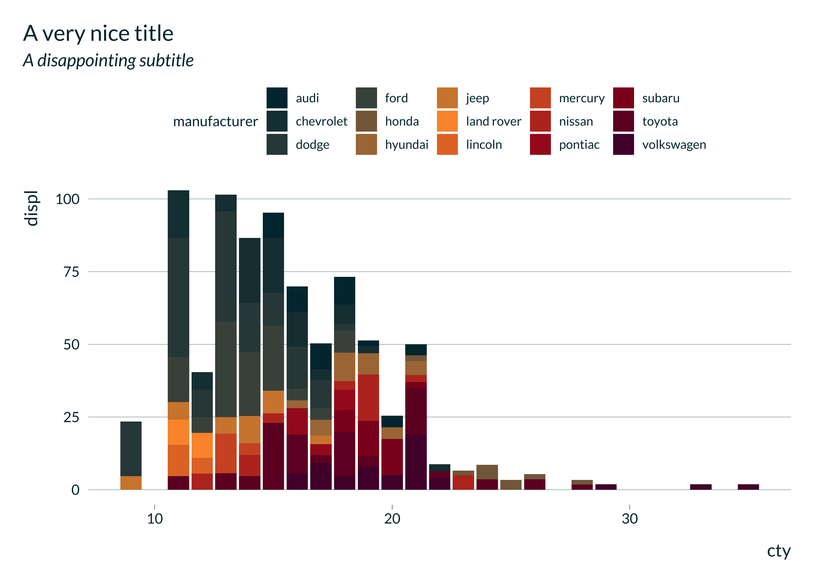
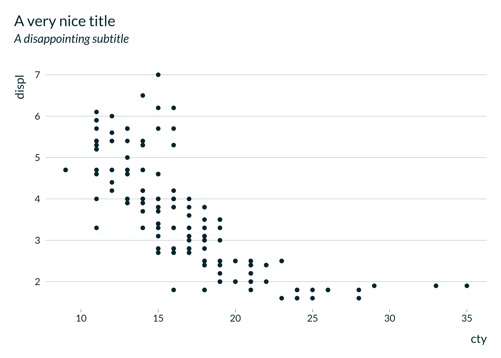

This package provides not particularly nice and, hopefully, not particularly ugly ggplot themes.
Installation
You can install the development version of mediocrethemes from GitHub with:
# install.packages("devtools")
devtools::install_github("vincentbagilet/mediocrethemes")Note that you may need to restart your R session once the installation is complete to be able to use the package. You will also need an active internet connection the first time you call set_mediocre_all or theme_mediocre.
Usage
This package provides both a ggplot theme and a color palette.
Users can set the theme and color palette for all plots in a document with the function set_mediocre_all placed at the top of their document:
library(ggplot2)
library(mediocrethemes)
set_mediocre_all()
ggplot(data = ggplot2::mpg, aes(x = cty, y = displ, fill = manufacturer)) +
geom_col() +
labs(title = "A very nice title", subtitle = "A disappointing subtitle")
Users also can set the theme and color palette independently.
ggplot(data = ggplot2::mpg, aes(x = cty, y = displ)) +
geom_point() +
theme_mediocre() +
scale_mediocre_d() +
labs(title = "A very nice title", subtitle = "A disappointing subtitle")
Examples

Additional palettes
Note that additional palettes are available. Most palettes are divergent and can be turned into two gradient palettes. This is done by splitting a divergent palette in the middle, and use either the set of colors on the right or on the left (flipped to get light colors for small values).